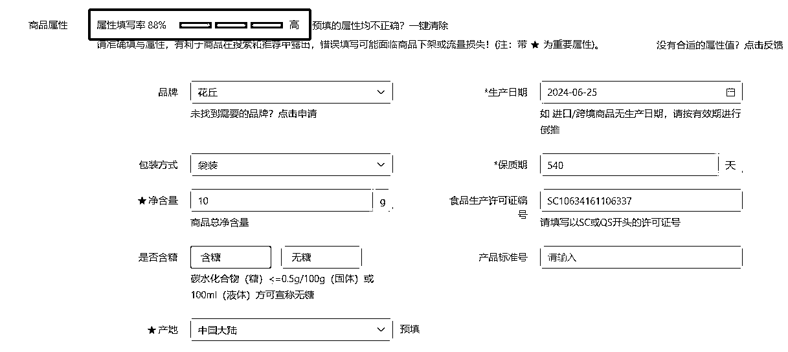
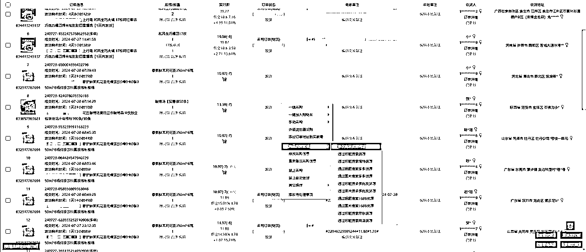

来源：https://ecnmbp29upbv.feishu.cn/docx/A17odz6OjoOiQ1xR7ihcUz7Vn8d
大家好，我是蓝狐，这次给大家分享拼多多店群这个项目的一些玩法心得。
拼多多对比其他电商平台，相对于来说会对新手比较友好一些，可以更快的拿到结果，并且还可以批量化放大，可以开设不同类目的店铺，效果还是可以的。
特别是想做电商的小伙伴，可以参考下，做店群一般是 5 家店起步，目前这边主要测试的是食品，利润在 10-15 个点左右。
蓝狐这边目前是给大家分享的无货源的模式，纯自然流的玩法。
下面就给大家从以下几个板块进行介绍：
一、前期准备工作；
二、开店流程；
三、店铺基础设置；
四、上品流程；
五、设置优惠券和评价有礼；
六、发货流程；
七、处理售后；
八、新手建议。
1、准备好营业执照，个人独资企业+食品证+授权书。
2、注册好热度星推，网址：https://reduxingtui.com/
3、电脑上安装好至尊宝插件，网址：https://zzb.3977s.com/
4、准备好手机号，开店使用，一个店铺一个手机号，店群一般 5 个店铺起，不强制要求是同一个人。
5、注册两个快手，并且达人入驻。
6、准备好安卓手机，自动发货需要使用。
7、手机和电脑下载拼多多商家工作台。
8、电脑安装掌柜卫士（拼多多服务市场里面搜索，12/月，前期先不用购买），自动发货使用。
9、前期最好要走多多电子面单，可以去谈一下合作快递，只需要发前面 30-50 单左右。
10、准备好周转资金，1-2w，看店铺数量。
营业执照下来了，我们就可以进行开店了，我们目前是做的食品类目，具体开店流程如下：
1、电脑端打开拼多多商家版 https://mms.pinduoduo.com/login/redirectUrl=https%3A%2F%2Fmms.pinduoduo.com%2F， 然后点击 0 元开店
2、按照系统提示填入相应信息，点击立即开店
3、输入没注册过拼多多的手机号，设置密码，接收验证码
4、点击右上角店铺信息进行认证

5、选择专营店，进行下一步
6、主营类目选择【食品保健】，主体类型选择【工商企业】，让然后上传营业执照，把信息填写完整
7、根据系统提示填写法人相关信息，下一步
8、根据提示填写相对应信息（商标注册证和授权书是一个压缩文件，一般和营业执照一起发的）
9、类目名可以选择我框选的那几个，然后上传管理人身份信息，微信扫码验证，下一步
10、点击确定，等待审核通过即可（审核时间不一定是 3 天，有空多刷新一下）
1、店铺审核通过后先交保证金
2、完善店铺信息，上传品牌资质和店铺经营许可证
3、设置运费模板
买家付运费区域全部删除
不配送区域全部选择合作快递不配送该区域（因篇幅有限没有截完全部区域）
客服也需要参加考试，才能回复客户的问题哦。
电脑打开热度星推，网址：https://reduxingtui.com/，选择商品库—商品。
选择抖音—食品饮料—24 小时销量，这里面的品基本上都是可以的，不过我们还是要筛选一下，因为我们是从快手里面进行发货的，我们要选择在抖音和快手都有货的商品，并且快手的佣金不能低于抖音的佣金，可以一样。
举例下面这个产品，花丘酸梅汤夏日正宗酸梅晶冲饮独立包装桂花汁乌梅粉 100 条/30 条

我们去热度星推快手搜一下这个产品，也可以直接去快手小店搜，看哪里的佣金更高。
对比了一下热度快手和快手小店的快分销的佣金相差不大，和热度抖音的佣金也相差不大，这就符合我们的佣金要求。
接下来我们是要下载我们所需要的主图详情页，我们用到是至尊宝插件，https://zzb.3977s.com/
先复制热度抖音商品的链接，到浏览器里面。
点击主图详情页&视频下载，把所需要的商品下载下来
下载的时候选择多文件夹，会分类好，不这么乱
拼多多商家后台，点发布新商品，然后商品是酸梅冲调，我们选择酸梅粉，点击确认发布该商品。
第一步是上传主图，这里要注意的是，抖音那边第一张是哪张图，我们就上传哪张图，而且如果图片上有旗舰店，专卖店，价格之类的，需要用做图工具马赛克，比如稿定设计，创可贴，美图秀秀等。
第二步是商品标题，标题就是热度星推抖音的标题。
第三步是填写商品属性，直接可以参考拼多多同行的，可以电脑浏览器打开拼多多手机版网址，这样填写方便点，重点是属性填写率要显示高。

第四步是详情页，如果有商品视频也可以放，没有不放也没事，白底图不放也行。
第四步是设置库存规格，以及价格，规格设置和快手上一样，库存设置 100，拼单价设置快手价格 +10 元，单买价比拼单价多 1 元，SKU 图从主图里面设置一张，商品参考价比最高价多 10 元就行，满 2 件折扣设置 9.8 折，9.9 折都行。
第五步就是设置好运费模版，运费模版一定要设置自己的运费模板，发货时间（一般 48 小时），然后 7 天无理由退货，假一赔一，坏了包赔，都可以勾选，最后就可以提交上架了。
1、新客立减，设置 7 元；

2、商品立减，设置 6 元；
3、限时限量；
选择自动创建，规格级，折后价，这边我们需要用到一个表格，计算价格。
注意：如果是想走多多面单，用合作快递发货，那么活动库存设置最低就行，等卖完了再次创建限时限量，因为这个前期会亏个快递费，但是这个后期会稳定点。
直接搜评价有礼，预算可以根据自己情况设，一般设置个 100，返现一般 0.5 元，这个一般是积累一定的评价，出 DSR，有了 DSR 的店铺，不容易断流，当然，觉得太慢，也可以刷的。

先到拼多多服务市场购买掌柜卫士，12 元/月，一个店铺购买一个，购买完了下载并且安装，接下来注册好。
注册好了进入第一步先进行绑定店铺，根据提示进行绑定，这边就不一一介绍了。

接下来登录快手账号，右上角选择快手。
添加账号，保存，设为默认，这里面可以设置多个快手账号，需要哪个快手下单，就把那个设置为默认账号。
右上角选择登录
登录完成点右上角，显示登录成功。
接下来需要使用到安卓手机，先打开手机中 USB 调试，然后用数据线连接电脑，再选择文件传输，因为手机型号太多，这边打开手机 USB 调试的方法就不一一举例了，可以自己在抖音上搜一下教程。
选择需要发货的商品鼠标右键，商品货源管理—修改商品货源地址。

这边的货源网址，是需要通过转接，我们使用热度星推的快手转接举例，点击快手转链。
然后网址粘贴到货源网址 1，最后点击保存。
接下来选中要采购的商品，点击一键采购。
接下来
第一步刷新出设备码，
第二步点击启动，就会弹出手机画面，
第三步点击立即购买，
第四步核对规格数量，
第五步核对地址，
第六步支付完成点击采购完成。
这样就完成了一个订单的采购，熟练的话差不多 10 秒一个。
食品类目的售后相对于来说会少一些，退款的也比其他类目要少，总的来说，我们有什么问题，可以去问快手卖家，我们既是卖家，也是买家。
我们一般每天需要打开掌柜卫士查看一下退货退款的情况，避免我们受到损失，以下情况，第一个订单红色字体显示退款成功，证明我们的货款是退回来的，这个说明此订单已经完成，绿色字体是证明拼多多用户退款已完成。
第二个订单，显示卖家同意拒收后退款，那么这笔订单就需要再跟踪一下。
1、做电商是一个枯燥的事情，平台规则不变变化，不确定性因素也多，需要有耐心的去摸索，不要玻璃心。
2、一开始不要去囤货，前期自己缺乏经验判断，囤货很容易造成亏损。
3、做电商都是 7 分选品，3 分运营，需要不断去挖掘产品，分析市场需求。
4、做好服务，做好售后，不要轻易涨价。
5、前期可以自己先去摸索，不用着急付费，当然如果觉得时间重要，也可以付费，不过这个就要自己有判断能力。